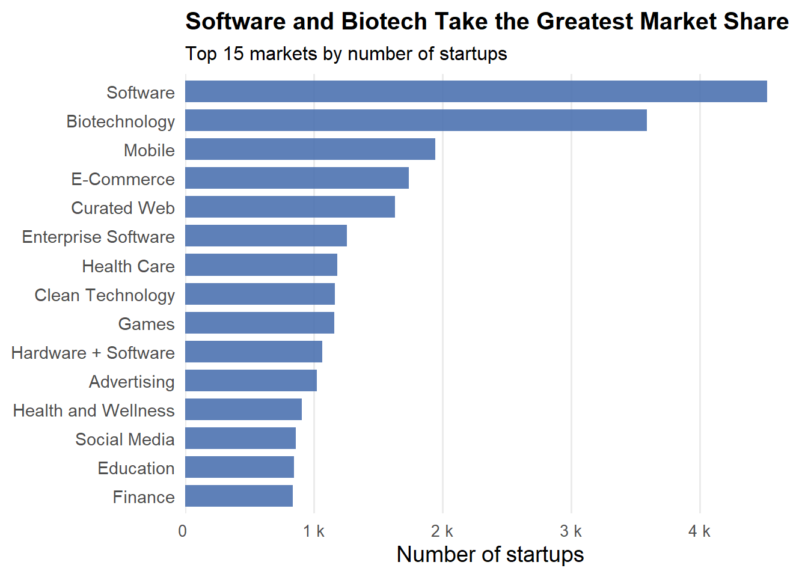
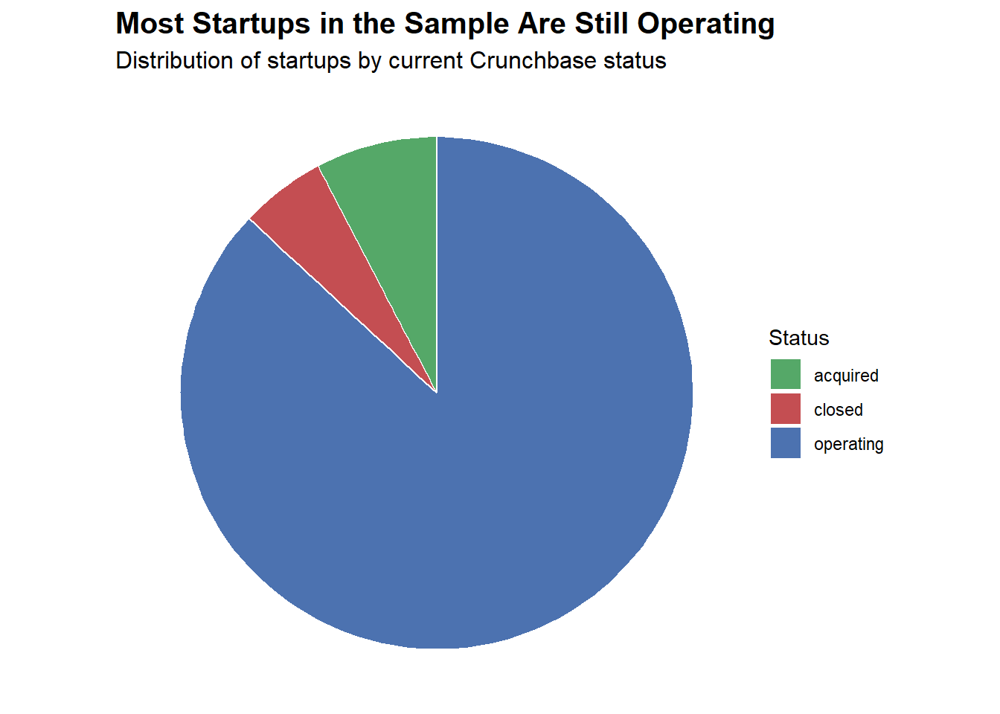
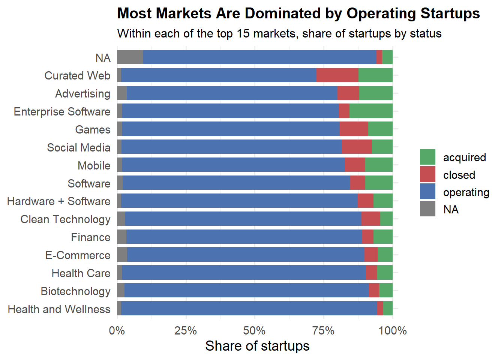
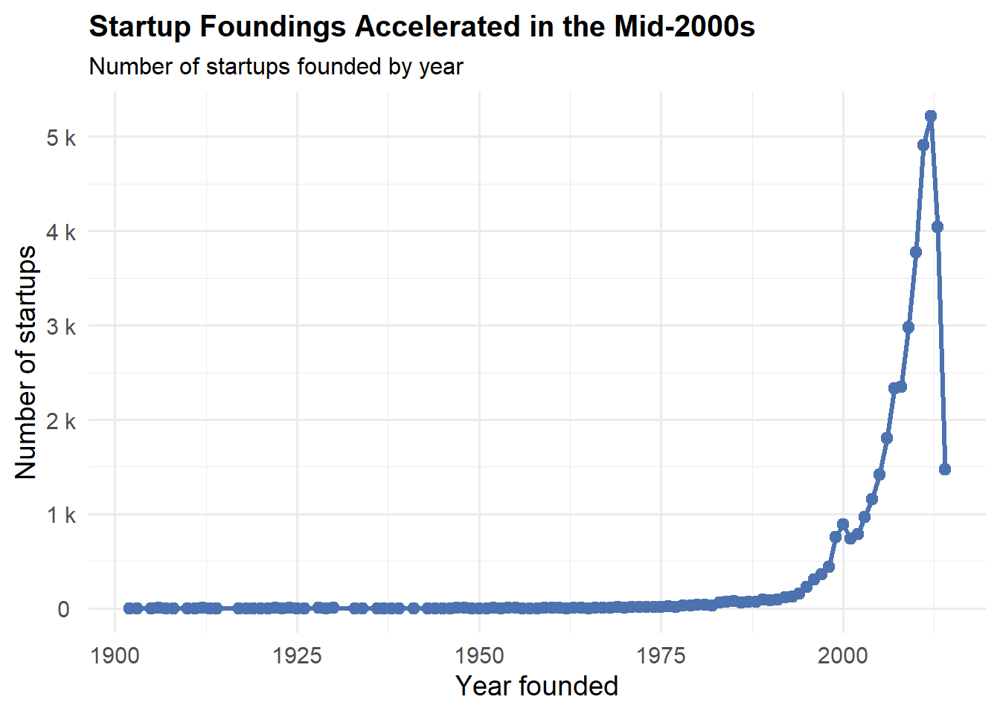
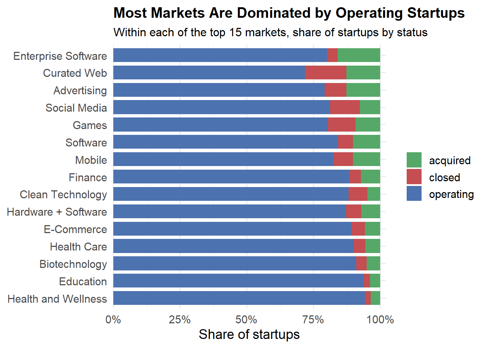
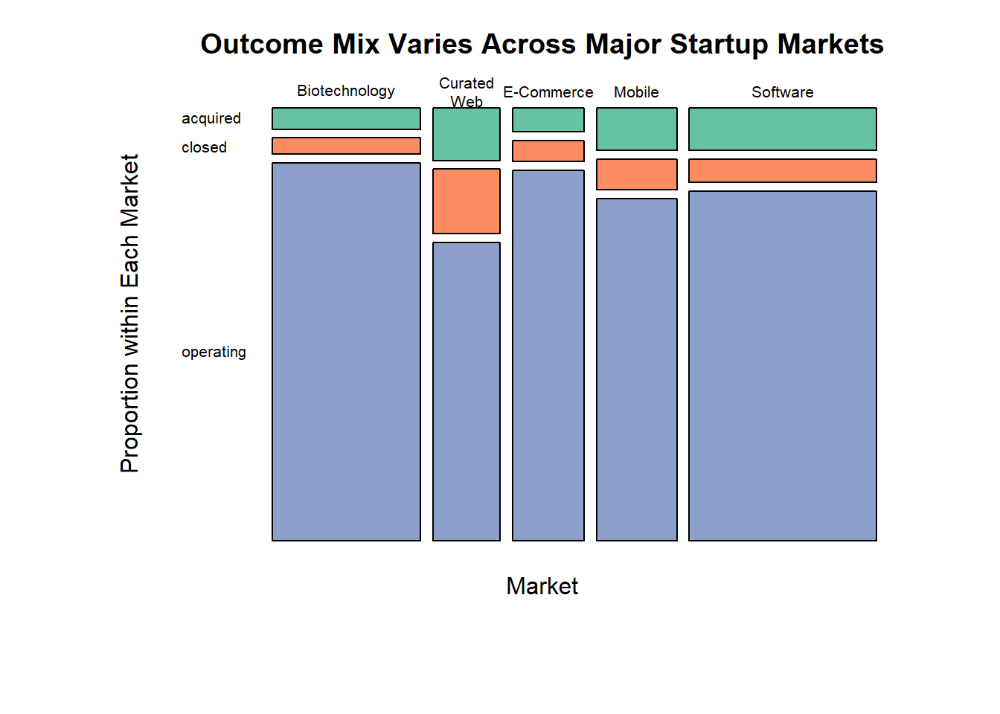
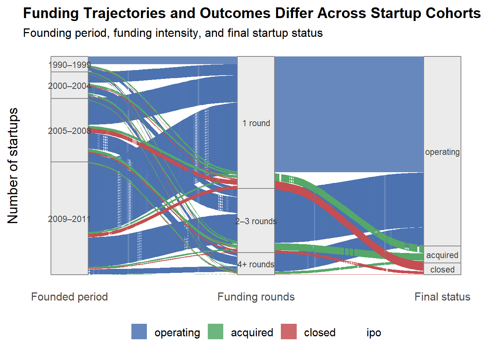
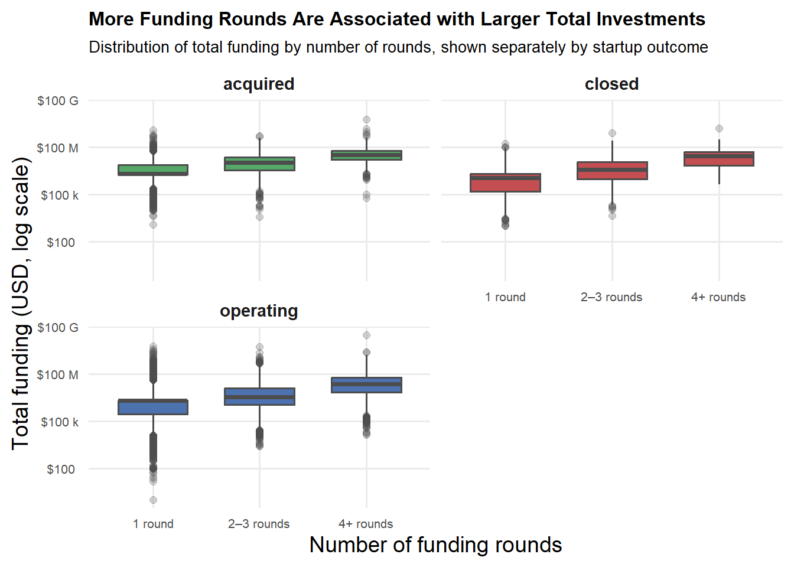

Code
library(tidyverse)
library(dplyr)
library(janitor)
library(lubridate)
library(scales)
library(GGally)
library(ggalluvial)
# Bigger, easy-to-read base font for all plots
theme_set(theme_minimal(base_size = 14))Across the startups, the majority of them remain operating, while acquisition and closure outcomes are relatively rare and accumulate over time. Funding intensity and industry context are strongly associated with outcomes, with older cohorts and heavily funded startups more likely to experience exits. These patterns suggest that time, fundraising depth, and market segment jointly shape startup trajectories.
library(tidyverse)
library(dplyr)
library(janitor)
library(lubridate)
library(scales)
library(GGally)
library(ggalluvial)
# Bigger, easy-to-read base font for all plots
theme_set(theme_minimal(base_size = 14))status_palette <- c(
operating = "#4C72B0",
acquired = "#55A868",
closed = "#C44E52"
)library(tidyverse)
library(janitor)
library(naniar)
startup_raw <- read_csv(
"investments_VC.csv",
locale = locale(encoding = "ISO-8859-1") # matches Crunchbase examples
)
startup <- startup_raw |>
clean_names() |> # makes names snake_case, trims spaces
select(-starts_with("unnamed_")) |> # drop completely empty columns
distinct() |> # remove exact duplicates if any
filter(!is.na(status))gg_founded_year <- startup |>
filter(!is.na(founded_year)) |>
count(founded_year) |>
ggplot(aes(x = founded_year, y = n)) +
geom_line(
linewidth = 1.2,
color = "#4C72B0"
) +
geom_point(
size = 2.4,
color = "#4C72B0"
) +
scale_y_continuous(
labels = label_number(
scale_cut = cut_si(""),
accuracy = 1
)
) +
labs(
title = "Startup Foundings Accelerated in the Mid-2000s",
subtitle = "Number of startups founded by year",
x = "Year founded",
y = "Number of startups"
) +
theme(
plot.title = element_text(face = "bold", size = 15),
plot.subtitle = element_text(size = 12)
)
gg_founded_yearFor most of the 20th century, the number of new startups remained extremely low and relatively flat, barely rising above a few dozen per year. A noticeable uptick begins in the late 1990s, coinciding with the growth of the internet and early tech boom.
The most striking pattern appears in the mid-2000s to early 2010s: startup formation skyrockets from a few hundred per year to over 5,000 per year at its peak. This surge likely reflects the combination of expanding venture capital availability, the rise of cloud computing (which reduced startup costs), and broader cultural and economic support for entrepreneurship. The sharp drop immediately after the peak may indicate incomplete data for very recent years—startups founded later may not yet be fully captured in the dataset.
Overall, the graph highlights that startup formation was historically rare but expanded explosively in the 2000s, marking a major shift in the scale and pace of entrepreneurial activity.
top_markets <- startup |>
count(market, sort = TRUE) |>
filter(!is.na(market)) |>
slice_head(n = 15)
gg_top_markets <- ggplot(
top_markets,
aes(x = fct_reorder(market, n), y = n)
) +
geom_col(
fill = "#4C72B0",
alpha = 0.9,
width = 0.75
) +
coord_flip() +
scale_y_continuous(
labels = label_number(
scale_cut = cut_si(""),
accuracy = 1
),
expand = expansion(mult = c(0, 0.05))
) +
labs(
title = "Software and Biotech Take the Greatest Market Share",
subtitle = "Top 15 markets by number of startups",
x = NULL,
y = "Number of startups"
) +
theme(
plot.title = element_text(face = "bold", size = 15),
plot.subtitle = element_text(size = 12),
axis.text.y = element_text(size = 11),
axis.text.x = element_text(size = 10),
panel.grid.major.y = element_blank(),
panel.grid.minor = element_blank()
)
gg_top_markets
This distribution reveals that Software dominates the startup landscape by a wide margin, with nearly 4,500 companies, which is far more than any other sector. Biotechnology follows as the second-largest market, though its total count still trails Software by a significant gap. These two categories stand out clearly as the major hubs of startup activity.
Beyond the top two, markets such as Mobile, E-Commerce, and Curated Web form a second tier of sizable but considerably smaller sectors, each hosting roughly 1,000–1,500 startups. The remaining markets, such as Enterprise Software, Health Care, Clean Technology, Games, and Advertising, have progressively fewer startups but still represent meaningful areas of innovation and investment.
Thus, we could tell that a few sectors (especially Software and Biotechnology) account for a disproportionately large share of companies, while many other markets are substantially smaller in scale. This distribution suggests that entrepreneurial activity tends to cluster in domains with either low barriers to entry (Software) or substantial scientific and commercial opportunity (Biotechnology).
status_counts <- startup |>
count(status)
gg_status_pie <- ggplot(
status_counts,
aes(x = "", y = n, fill = status)
) +
geom_col(width = 1, color = "white") +
coord_polar(theta = "y") +
scale_fill_manual(values = status_palette) +
labs(
title = "Most Startups in the Sample Are Still Operating",
subtitle = "Distribution of startups by current Crunchbase status",
fill = "Status"
) +
theme_void() +
theme(
plot.title = element_text(face = "bold", size = 15),
plot.subtitle = element_text(size = 12),
legend.position = "right"
)
gg_status_pie
Operating startups dominate the data, reflecting both the prevalence of ongoing firms and the fact that many startups have not yet reached an exit outcome.
startup_year_status <- startup |>
filter(!is.na(founded_year), status != "unknown") |>
count(status, founded_year)
gg_facet_year_status <- ggplot(
startup_year_status,
aes(x = founded_year, y = n, fill = status)
) +
geom_col(
alpha = 0.9,
width = 0.85
) +
scale_fill_manual(values = status_palette) +
facet_wrap(~ status, ncol = 2, scales = "free_y") +
labs(
title = "Startup Founding Trends Differ Across Outcomes",
subtitle = "Number of startups founded per year, separated by final status",
x = "Year founded",
y = "Number of startups"
) +
theme_minimal(base_size = 14) +
theme(
plot.title = element_text(face = "bold", size = 15),
plot.subtitle = element_text(size = 12),
axis.text.x = element_text(angle = 45, hjust = 1, size = 10),
axis.text.y = element_text(size = 11),
strip.text = element_text(face = "bold", size = 12),
panel.grid.minor = element_blank(),
legend.position = "none"
)
gg_facet_year_status
Startup founding activity differs across outcomes and over time. Acquired startups are heavily concentrated in earlier founding years, reflecting the long time horizons required for exits or failure to materialize. In contrast, operating startups are overwhelmingly founded in more recent years, driven by the rapid expansion of entrepreneurial activity in the late 1990s and 2000s.
This divergence highlights a key survivorship bias (https://corporatefinanceinstitute.com/resources/career-map/sell-side/capital-markets/survivorship-bias/) in startup data: many newer firms are still classified as operating not because they are more successful, but because they have not yet had sufficient time to exit. Together, these panels emphasize the importance of accounting for cohort effects when comparing startup outcomes.
gg_funding_status <- startup |>
filter(funding_total_usd > 0) |>
ggplot(aes(x = status, y = funding_total_usd, fill = status)) +
geom_boxplot(
color = "black",
outlier.alpha = 0.3
) +
scale_fill_manual(values = status_palette) +
scale_y_log10(
labels = scales::label_number(
prefix = "$",
scale_cut = cut_si(""),
accuracy = 1
),
breaks = c(1e5, 1e6, 1e7, 1e8, 1e9)
) +
labs(
title = "Acquired Startups Tend to Raise More Money In General",
subtitle = "Distribution of total funding by status (log scale)",
x = NULL,
y = "Total funding (USD, log scale)"
) +
theme(
plot.title = element_text(face = "bold", size = 15),
plot.subtitle = element_text(size = 12),
legend.position = "none" # clean, since x already shows status
)
gg_funding_status
Acquired startups exhibit substantially higher total funding than both closed and still-operating firms, with their median investment level above the other groups. This pattern suggests that larger capital inflows may increase the likelihood of a successful exit: alternatively, that investors concentrate funding in ventures already demonstrating strong traction.
Closed startups, by contrast, show the lowest funding levels, with a compressed distribution and few high-end outliers. This aligns with the possibility that under-capitalized startups struggle to achieve long-term sustainability or reach attractive exit opportunities.
Operating startups fall between the two outcomes. On average, they raise more capital than closed firms but remain below the funding levels typical of acquired companies. At the same time, the distribution for operating startups spans a wide range: some achieve exceptionally high funding (sometimes even exceeding that of acquired firms), while a small subset receives very little, falling below the levels seen in many closed firms. This indicates that the “operating” category contains both high-growth winners still scaling and lower-capitalized companies that have yet to reach an inflection point.
Across all groups, the broad dispersion of funding, especially on a logarithmic scale, highlights the highly skewed, power-law nature of venture investment, where a small number of firms capture a disproportionately large share of total capital.
top_market_names <- top_markets$market
gg_market_status <- startup |>
filter(market %in% top_market_names) |>
count(market, status) |>
group_by(market) |>
mutate(prop = n / sum(n)) |>
ggplot(
aes(
x = fct_reorder(market, prop),
y = prop,
fill = status
)
) +
geom_col(width = 0.8) +
coord_flip() +
scale_fill_manual(values = status_palette) +
scale_y_continuous(
labels = label_percent(accuracy = 1),
expand = expansion(mult = c(0, 0.02))
) +
labs(
title = "Most Markets Are Dominated by Operating Startups",
subtitle = "Within each of the top 15 markets, share of startups by status",
x = NULL,
y = "Share of startups"
) +
theme(
plot.title = element_text(face = "bold", size = 15),
plot.subtitle = element_text(size = 12),
legend.title = element_blank()
)
gg_market_status
Across nearly all major markets, operating startups make up the overwhelming majority, highlighting a key structural feature of the startup ecosystem: most firms remain in the active, growth-seeking phase for long periods before reaching an exit event. This dominance of operating firms reflects long exit horizons, especially in sectors like education, health and wellness, biotechnology, where scaling takes time and market consolidation is slower. Yet the distribution of acquired and closed startups varies meaningfully across markets, revealing differences in exit dynamics and market maturity.
Markets such as advertising, curated web, and enterprise software show relatively higher acquisition shares, suggesting more active M&A pipelines and stronger integration opportunities with established incumbents. Meanwhile, closure rates, while generally modest, are most pronounced in markets such as games, social media, and curated web, where consumer preferences shift rapidly and competition is especially intense, leading to higher churn.
status_levels <- c("acquired", "closed", "operating")
founded_status <- startup |>
filter(!is.na(founded_year)) |>
# make sure status is a factor with the three levels we expect
mutate(status = factor(status, levels = status_levels)) |>
count(founded_year, status) |>
# ensure we have a row for every year × status, fill missing with 0
complete(founded_year, status, fill = list(n = 0)) |>
group_by(founded_year) |>
mutate(prop = n / sum(n)) |>
ungroup()
gg_founded_status <- ggplot(
founded_status,
aes(x = founded_year, y = prop, fill = status)
) +
geom_area(alpha = 0.85, color = "white", linewidth = 0.2) +
scale_fill_manual(values = status_palette) +
scale_y_continuous(
labels = label_percent(accuracy = 1),
limits = c(0, 1),
expand = expansion(mult = 0)
) +
labs(
title = "Younger Cohorts Have Larger Chance to Be Acquired or Close",
subtitle = "Share of startups with each outcome by founding year",
x = "Year founded",
y = "Share of startups"
) +
theme(
plot.title = element_text(face = "bold", size = 15),
plot.subtitle = element_text(size = 12),
legend.title = element_blank(),
legend.position = "bottom"
)
gg_founded_status
For the earliest cohorts, roughly from the early 1900s through the 1960s, the large swings in the chart are not meaningful indicators of true trends. Instead, they reflect extremely small sample sizes, sometimes with only one startup founded in a given year. As a result, the proportions jump sharply between 0% and 100%, making these early patterns unreliable for interpretation.
Beginning around the 1970s, the data becomes dense enough to reveal more stable and interpretable trends. Across these later decades, operating startups consistently make up the largest share within each founding cohort. The share of closed startups gradually increases for more recent cohorts, while the share of acquired startups peaks among those founded in the late 1990s and early 2000s, a period marked by the rise of the internet era and substantial consolidation in the tech sector. This widening of the green band indicates that acquisitions were relatively more common for startups founded during this time.
For startups founded after roughly 2000, the closed share becomes more prominent.This suggests that among the firms with known outcomes, closure becomes increasingly common in more recent years. Finally, for the most recent cohorts, particularly those founded after 2010, the chart shows an overwhelming share classified as “operating.” This should not be interpreted as greater success; rather, these startups are simply too young to have reached an exit event, resulting in a near-100% operating classification by default.
# Get top 5 markets
top_markets <- startup |>
count(market, sort = TRUE) |>
slice_head(n = 6) |>
pull(market)
# shorten market labels slightly (important)
mosaic_data <- startup |>
filter(market %in% top_markets) |>
mutate(
market = str_replace_all(market, " ", "\n")
) |>
select(market, status)
tbl <- table(mosaic_data$market, mosaic_data$status)
# Increase margins but not excessively
par(mar = c(6, 6, 3, 3))
mosaicplot(
tbl,
color = RColorBrewer::brewer.pal(n = ncol(tbl), "Set2"),
main = "Outcome Mix Varies Across Major Startup Markets",
xlab = "Market",
ylab = "Proportion within Each Market",
las = 1,
cex.axis = 0.65, # smaller tick labels
cex.lab = 1.0, # axis labels readable
cex.main = 1.2 # title not overpowering
)
Across all five markets, operating startups make up the largest share, indicating that most startups in these sectors have not yet reached a definitive exit event. However, the relative shares of acquired and closed startups vary meaningfully by market.
Biotechnology, E-Commerce, Mobile, and Software all show a similar pattern: a modest share of acquisitions at the top, a relatively small proportion of closures in the middle, and a dominant base of operating firms. These industries tend to have long development cycles (Biotech), high growth potential (Mobile, Software), and frequent acquisition activity (Software, E-Commerce), which may help explain the moderate levels of successful exits.
Curated Web, however, stands out obviosuly. It has a much higher proportion of closed startups compared to the other markets, indicating greater volatility or lower long-term sustainability in this category. The smaller operating share suggests that many firms in this niche fail to survive long enough to be acquired or to continue operating.
In the end, this mosaic plot highlights that while most startups remain active across markets, the risk of failure is much higher in the Curated Web space, but industries like Software, Mobile, and Biotechnology exhibit stronger operating persistence and relatively greater acquisition activity.
library(ggalluvial)
startup_alluvial <- startup |>
filter(
!is.na(founded_year),
!is.na(funding_rounds),
!is.na(status)
) |>
mutate(
status = factor(
status,
levels = c("operating", "acquired", "closed", "ipo")
),
founded_period = cut(
founded_year,
breaks = c(1990, 2000, 2005, 2010, 2015, 2020),
labels = c("1990–1999", "2000–2004", "2005–2008",
"2009–2011", "2012–2014"),
include.lowest = TRUE,
right = FALSE
),
rounds_bucket = case_when(
funding_rounds == 0 ~ "0 rounds",
funding_rounds == 1 ~ "1 round",
funding_rounds %in% 2:3 ~ "2–3 rounds",
funding_rounds >= 4 ~ "4+ rounds"
)
) |>
drop_na(founded_period, rounds_bucket)
gg_alluvial <- ggplot(
startup_alluvial,
aes(
axis1 = founded_period,
axis2 = rounds_bucket,
axis3 = status,
y = ..count..
)
) +
geom_alluvium(
aes(fill = status),
width = 1/10,
alpha = 0.85
) +
geom_stratum(
width = 1/5,
fill = "grey92",
color = "grey50"
) +
geom_text(
stat = "stratum",
aes(
label = after_stat(stratum),
y = after_stat(y)
),
vjust = 0.5,
size = 3.0,
color = "grey25"
) +
scale_fill_manual(values = status_palette, drop = FALSE) +
scale_x_discrete(
limits = c("Founded period", "Funding rounds", "Final status"),
expand = c(.10, .05)
) +
labs(
title = "Funding Trajectories and Outcomes Differ Across Startup Cohorts",
subtitle = "Founding period, funding intensity, and final startup status",
x = NULL,
y = "Number of startups"
) +
theme_minimal(base_size = 14) +
theme(
plot.title = element_text(face = "bold", size = 15),
plot.subtitle = element_text(size = 12),
axis.text.y = element_blank(),
panel.grid = element_blank(),
legend.position = "bottom",
legend.title = element_blank()
)
gg_alluvial
This alluvial plot illustrates how startups transition from their founding period to different levels of funding intensity and ultimately to their final outcomes. The more recent cohorts, particularly those founded between 2009 and 2011, form the thickest streams, indicating that startup formation accelerated significantly in the post-2008 tech boom. Across all cohorts, the majority of startups receive only a single funding round, and only a small fraction progress to two or three rounds, with an even smaller group reaching four or more rounds. This pattern reflects the steep funnel of venture funding: many companies raise initial capital, but relatively few sustain investor support through later stages.
The funding pathways are strongly correlated with outcomes. Startups receiving only one round tend to remain operating but also make up a large share of closures, suggesting that many early-stage firms struggle to maintain momentum. Those with two or three rounds exhibit a more balanced distribution across operating, acquired, and closed outcomes, indicating that this middle group is competitive enough to move toward some form of exit—positive or negative. The highest funding category, four or more rounds, shows the strongest flow toward acquisitions (no closure records), highlighting that sustained funding is a strong marker of eventual acquisition potential. Closures appear across all funding levels but are concentrated among companies with one or two rounds. Despite these differences, the operating category remains the plurality across all groups, particularly for the most recent cohorts whose outcomes may still be unfolding.
startup_facet <- startup |>
filter(funding_total_usd > 0, !is.na(funding_rounds), !is.na(status)) |>
mutate( rounds_bucket = case_when(
funding_rounds == 0 ~ "0 rounds",
funding_rounds == 1 ~ "1 round",
funding_rounds %in% 2:3 ~ "2–3 rounds",
funding_rounds >= 4 ~ "4+ rounds",
TRUE ~ NA_character_ ),
rounds_bucket = factor(
rounds_bucket,
levels = c("0 rounds", "1 round", "2–3 rounds", "4+ rounds")
)
) %>% drop_na(rounds_bucket)
gg_facet_funding_rounds <- ggplot(
startup_facet,
aes(x = rounds_bucket, y = funding_total_usd, fill = status)
) +
geom_boxplot(
width = 0.65,
color = "grey30",
outlier.alpha = 0.25
) +
scale_fill_manual(values = status_palette) +
scale_y_log10(
labels = label_number(
prefix = "$",
scale_cut = cut_si(""),
accuracy = 1
)
) +
facet_wrap(~ status, ncol = 2) +
labs(
title = "More Funding Rounds Are Associated with Larger Total Investments",
subtitle = "Distribution of total funding by number of rounds, shown separately by startup outcome",
x = "Number of funding rounds",
y = "Total funding (USD, log scale)"
) +
theme_minimal(base_size = 14) +
theme(
plot.title = element_text(face = "bold", size = 12),
plot.subtitle = element_text(size = 10),
strip.text = element_text(face = "bold", size = 11),
axis.text.x = element_text(size = 8),
axis.text.y = element_text(size = 8),
panel.grid.minor = element_blank(),
legend.position = "none"
)
gg_facet_funding_rounds
Across all three outcome categories, the same core pattern appears: startups that raise more rounds tend to receive substantially larger total investments.
For acquired startups, funding increases consistently as firms progress from one round to 2–3 rounds to 4+ rounds. Acquired firms with 4+ rounds have the highest median funding levels in the entire chart, suggesting that sustained investment is strongly associated with eventual acquisition—likely reflecting investor confidence, growth potential, or strategic value.
Among closed startups, a similar but less pronounced pattern emerges. Startups that ultimately fail still show higher funding levels when they raise more rounds, indicating that even firms that eventually shut down may attract significant capital before their failure becomes evident. However, their distributions remain below those of acquired firms, reinforcing that higher funding alone does not guarantee success.
For operating startups, total funding also increases with additional rounds, and their median funding levels for 2–3 and 4+ rounds approach those of acquired firms. This suggests that many actively operating firms remain well-capitalized and could still be on a trajectory toward future exits.
Lastly, we could tell that more funding rounds correspond to much larger total funding amounts, regardless of a startup’s eventual outcome. What differs by outcome is the typical funding level: acquired firms tend to sit at the top of the funding distribution, while closed firms occupy the lower end, with operating firms in between. This pattern reflects both the selection effects of venture capital and the financial trajectories associated with different startup futures.